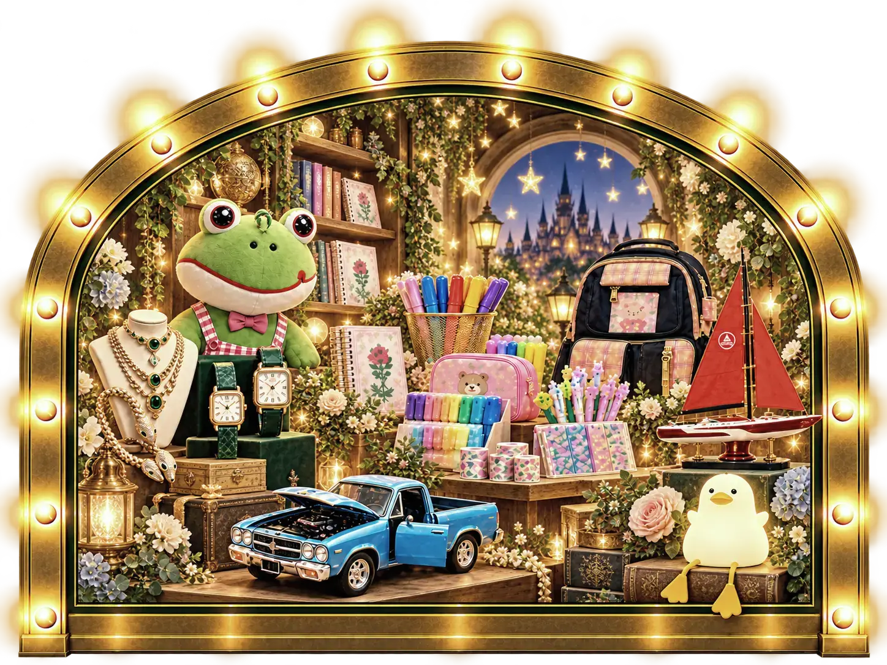
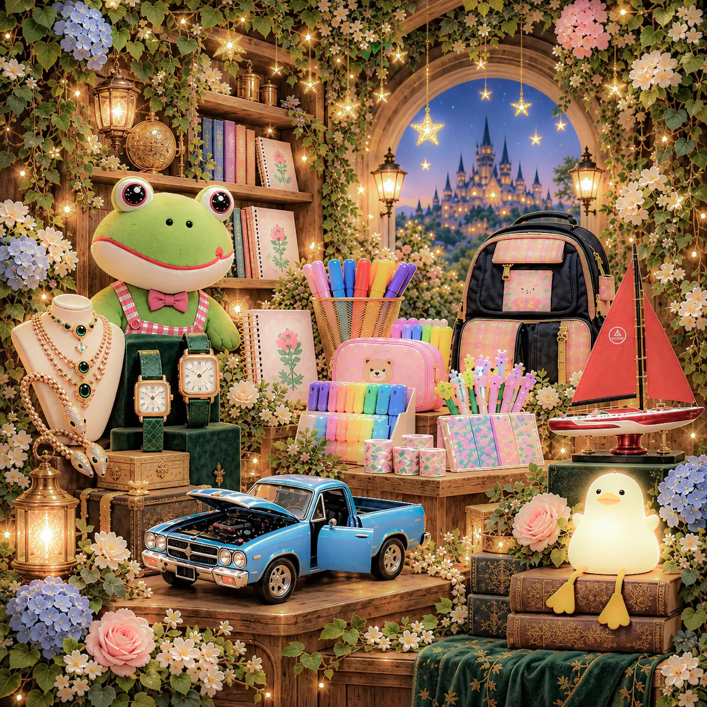

Notların
bir yeri olsun.
Ders notları, yapılacaklar listesi, aklına gelen fikirler... Defterlerin sayfalarına, boyutlarına ve kapaklarına yakından bakabilirsin.
Çizgili mi, kareli mi?
Bir defter.
Bir kalem.
Bolca heves.
Okul alışverişi için de günlük notların için de defter ve kalemlere yakından bak. Yeniköy'deki dükkânımıza uğrayabilirsin.
Kırtasiyeye göz atKimi çizgili defter sever, kimi kareli. Kalemde de herkesin eli başka modele alışır.
Antalya'da kırtasiye arıyorsan, Döşemealtı Yeniköy'deki Harika Şeyler Dükkanı'na uğrayabilirsin. Defter ve kalemleri yakından inceleyebilir, ihtiyacına uygun olanı seçebilirsin. Belirli bir ürün için gelmeden önce bizi arayabilirsin.

Ders notları, yapılacaklar listesi, aklına gelen fikirler... Defterlerin sayfalarına, boyutlarına ve kapaklarına yakından bakabilirsin.
Yazmayı sevdiğin kalem bir başkadır. Farklı kalem seçeneklerini ve renklerini mağazada karşılaştırabilirsin.
Okul çantası hazırlanırken de masa başında bir şey eksik olunca da kırtasiye gerekir. Aradığın ürünün bulunup bulunmadığını bize sorabilirsin.
MAĞAZAMIZDA
Defterin sayfasını, kalemin rengini ve ürünlerin boyutunu mağazada daha iyi görebilirsin. Fotoğraflar örnek amaçlıdır; çeşitler ve stok durumu zaman içinde değişebilir.

Defterlere, kalemlere ve kırtasiye ürünlerine bakmak istersen Yeniköy'deki dükkânımıza bekleriz.
MERAK EDİLENLER
Harika Şeyler Dükkanı, Antalya Döşemealtı Yeniköy Mahallesi, İnönü Caddesi No: 127/8 adresinde. Okul ve günlük kırtasiye ihtiyaçların için mağazamızı ziyaret edebilirsin.
Defter, kalem ve kırtasiye seçeneklerine mağazamızda göz atabilirsin. Listenle gelmen işini kolaylaştırır; her ürünün her zaman stokta olduğunu garanti edemeyiz.
Defter çeşitleri dönem dönem değişebilir. İhtiyacın olan defterin boyutunu, çizgi türünü ve sayfa sayısını belirterek gelmeden önce bize sorabilirsin.
Mağazamızdaki kalem seçeneklerini yakından inceleyebilirsin. Kurşun kalem, tükenmez kalem veya belirli bir marka arıyorsan güncel stok bilgisini telefonla öğrenebilirsin.
Güncel stok bilgisi ürünün türüne, markasına ve modeline göre değişebilir. Belirli bir ürün için 0532 373 36 33 numarasından bizi arayabilirsin.
Fiyatlar ürüne ve markaya göre değişebilir. İlgilendiğin defterin, kalemin veya başka bir kırtasiye ürününün güncel fiyatını mağazamızdan öğrenebilirsin.
Bu sayfa, Döşemealtı'ndaki fiziksel mağazamızı tanıtıyor. Buradan sipariş veya ödeme yapılmıyor. Ürünleri yerinde görmek için mağazamızı ziyaret edebilirsin.
Hafta içi 08.00–20.00, cumartesi ve pazar günleri 10.00–21.00 saatleri arasında açığız. Resmî tatillerde gelmeden önce telefonla teyit etmeni öneririz.